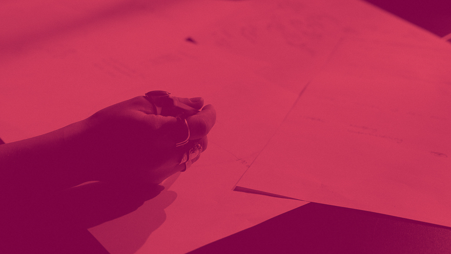
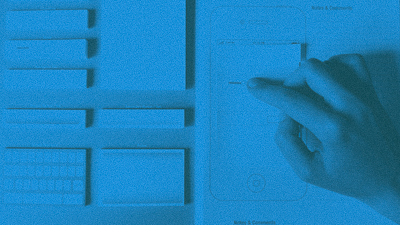

Prototyping
Prototyping is the conversation you have with your ideas. – Tom Wujec
Brainstorm: Use an open brainstorm and a lot of paper - it’s easy and cheap and part of the UX design process
In its essence prototyping is about creating an early sample, model or/and release. It is created to test and evaluate a concept or process - ultimately learned from. Incremental iterative refinements. Prototypes is cleverly used before investing time and money into development.
A prototype can be anything from paper drawings (low-fidelity) to something that allows click-through of a few pieces of content to a fully functioning site (high-fidelity).
It can be used to provide specifications for a real working system rather than a theoretical one. In the design process prototyping lies between the formalization and the evaluation of an idea. Prototyping can be done various ways e.g. through coding, making with materials and electronics.
Prototyping is closely related to sketching, but the intentions are different. Bill Buxton, in his book Sketching User Experiences, provides a list of descriptors that help explain the differences:
| Sketching | Prototyping |
|---|---|
| Evocative | Dedactive |
| Suggest | Describe |
| Explore | Define |
| Question | Answer |
| Propose | Test |
| Provoke | Resolve |
| Tentative | Specific |
| Non-commital | Depiction |
Read more:
Interaction-design.org
Don Norman
Prototyping: Through incremental refinements the product goes from 0 to something – ultimately it’s reaches a final product.
Prototyping in industry
COOP Danmark case studyToke Frello, Nina Mørch, Camilla Jönsson & Morten Winther in cooperation with Coop Danmark - digital concept in physical shopping situations.
The purpose of the concept is to facilitate dialogue between children (3-6 years) and their parents about the origin and nature of food products. Interactive screens are placed in different food sections in the supermarket and on them children are given playful tasks to perform. The sticker references the task – a milk carton after milking a cow – which can be placed in a small booklet, which is handed out the first time the child interacts with the concept. In the booklet the sticker is grouped according to its origin - The milk carton would be placed with the cow etc.
The concept is the result of a user-centered development process. The process include contextual studies, focus groups, prototyping, target group analysis, business model development and stakeholder analysis.
Prototyping: A low-fidelity version of an app-design is made and tested.
DMD case – Vital Shades
In this project they explored how interactive shadows affected the aesthetic experience of an architectural space. To understand this, they built a prototype and set up a series of experiments with follow-up expert interviews based on the pragmatist aesthetics framework.
The prototype consists of an LED strip, a PIR- based motion detector(PID), a plant of the Schefflera genus and an Arduino. The LED’s are wrapped around the trunk of the plant, and the PID sits on the front of the pot. The LED’s on the strip are activated in succession and emits an upward spiraling pattern.
When continuous motion is detected over a short range of time by the PID, the pattern will increase its velocity. With the LED’s wrapped around the trunk, VitalShades creates shadows on its surroundings that are formed by the shape of the leaves. These shadows move about as a result of the light pattern.

Project: VitalShades. A participant interacting with a prototype consisting of a plant, peer sensor, LED-strip and an Audrino.